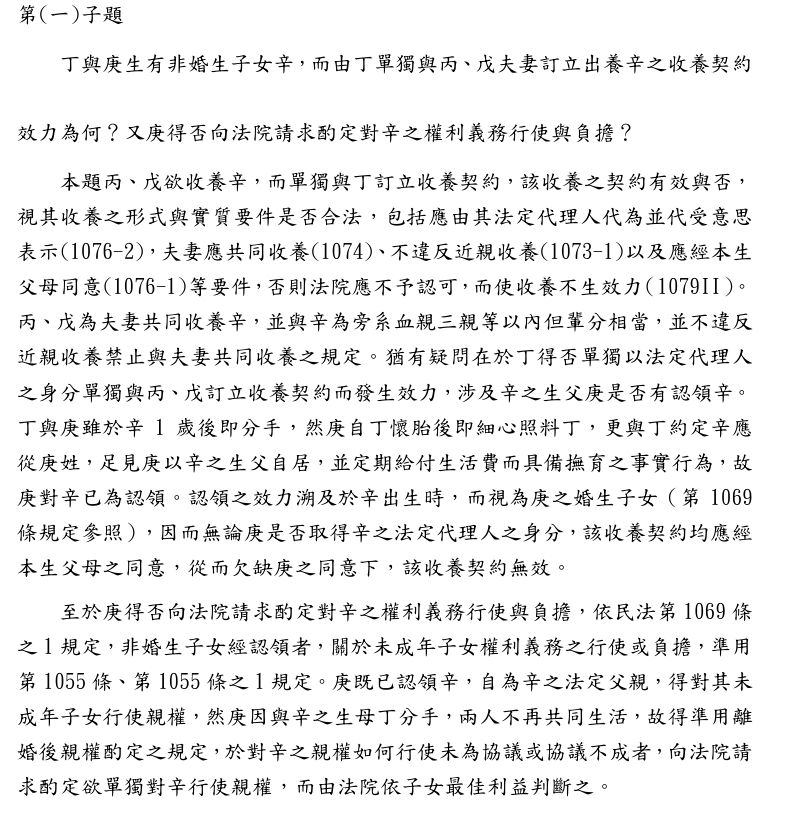
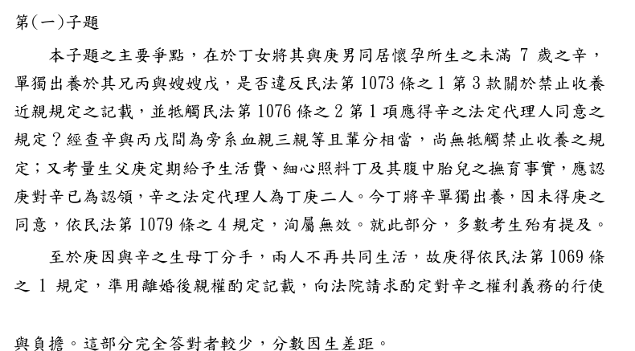

爸爸不知道的收養，有效嗎？
114年律師第二試｜民法與民事訴訟法（一）｜第二題第（一）小題（25分）
題目
這一題是親屬繼承題，有三個小題。本頁只做第（一）小題，用得到的事實畫黃色底線。
- （一）丁於辛1歲後與庚分手，而與丙、戊訂立收養契約，單獨將辛出養給丙、戊夫婦，該收養契約是否發生效力？庚得否向法院請求酌定對辛之權利義務行使與負擔？（25分）本頁只做這一題
- （二）丙因突發心臟病去世，戊仍與甲、乙互相照顧多年，感情深厚。此時甲、乙有意收養戊，雙方訂立書面之收養契約，向法院聲請收養之認可，法院得否為收養認可之裁定？又如甲、乙與戊事先訂立書面之終止姻親關係契約，其結果是否不同？（25分）
- （三）甲因丁與庚交往同居生子一事，始終未能釋懷，在一次大吵當中，丁以言語辱罵甲之後，多年沒有來往，至甲重病入院亦始終未為探望，故甲於代筆遺囑中表明不讓丁繼承其財產，見證人亦聽聞此事。未料，該代筆遺囑因欠缺其中一見證人之簽名而無效。若甲、乙於丙死亡後未收養戊，甲死亡後留下遺產新臺幣1,500萬元，應如何繼承？（25分）（本題講義）
影片說明
影片依序示範：主播介紹題目、整題讀一遍再框出第（一）小題、懷孕到出養的故事、關係圖、兩個問題的共同前提、第1065條、學弟學姊對話說明44台上1167、認領溯及出生的時間軸、收養要件檢查、少了庚的契約、酌定親權的天平、三個易錯點，最後把擬答從頭看一遍。
關係圖：對辛來說，誰是誰？
丙是辛的舅舅（旁系血親三親等），戊是舅媽（旁系姻親三親等），輩分都比辛高一輩，與養父母的位置相當。
先懂三個詞
答題地圖
標號層次：一、→（一）→1.。第一行直接寫結論，不再加題號「（一）」。先處理認領，是因為庚是不是爸爸，決定了後面兩個問題。
考選部評分要點與閱卷委員的話
| 評分要點 | 內容 |
|---|---|
| 1. 收養要件 | 法定代理人代為並代受意思表示（1076-2）、夫妻共同收養（1074）、不違反近親收養（1073-1）、本生父母同意（1076-1），否則法院應不予認可（1079Ⅱ）。丙、戊與辛為旁系血親三親等以內但輩分相當，不違反近親收養禁止。 |
| 2. 庚已認領 | 庚自丁懷胎後細心照料、約定從庚姓，以生父自居並定期給付生活費，具備撫育事實，已為認領；效力溯及辛出生時（1069）。無論庚是否取得法定代理人身分，收養都應經本生父母同意，欠缺庚之同意，收養契約無效。 |
| 3. 酌定親權 | 依1069-1準用1055、1055-1。丁、庚分手不再共同生活，未協議或協議不成，庚得向法院請求酌定，由法院依子女最佳利益判斷。 |

閱卷委員的話：
- 辛與丙、戊為旁系血親三親等且輩分相當，不抵觸禁止收養之規定。
- 庚定期給生活費、細心照料丁及胎兒，應認已認領辛，辛之法定代理人為丁、庚二人；丁單獨出養，未得庚同意，依第1079條之4無效。多數考生都有提到。
- 庚得依第1069條之1準用離婚後親權酌定之規定請求法院酌定，這部分完全答對者較少，分數因此產生差距。

來源：考選部〈114年司法官、律師考試第二試法律專業科目評分要點及各科目成績統計〉附件第6、7、9、10頁，已轉成圖片逐頁核對。
擬答
收養契約無效；庚得請求法院酌定對辛權利義務之行使負擔。
一、庚已認領辛
（一）非婚生子女經生父撫育者，視為認領（民法第1065條第1項後段）；撫育費用亦非不得預付（44台上1167）。
（二）庚知丁懷胎後以生父自居，定期給付生活費、照料丁及胎兒，並約定辛從庚姓，足認有撫育事實，視為認領，效力溯及辛出生時（第1069條）。丁、庚共同為辛之法定代理人（第1086條、第1089條）。
二、收養契約之效力
（一）丙為辛之舅，屬旁系血親三親等；戊為旁系姻親三親等，輩分相當，不違反第1073條之1第3款；夫妻共同收養，符合第1074條。
（二）惟辛未滿7歲，應由法定代理人代為並代受意思表示（第1076條之2第1項）；子女被收養，並應得父母同意（第1076條之1）。
（三）本件丁單獨訂約，欠缺法定代理人庚之意思表示；縱認丁得代辛締約，亦未得已認領之父庚同意，且無第1076條之1第1項但書情形。依第1079條之4，收養無效，法院應不予認可（第1079條第2項）。
三、庚得請求酌定
（一）非婚生子女經認領者，其權利義務之行使負擔，準用第1055條、第1055條之1（第1069條之1）。丁、庚分手，未為協議或協議不成時，庚得請求法院酌定。
（二）法院應依辛之最佳利益，審酌一切情狀，決定由一方或雙方行使負擔，非當然由庚單獨行使。
擬答552字（含標題、標點與數字，不含空白，以程式計算）。
字數上限：為什麼是561字
| 項目 | 數字 |
|---|---|
| 本小題可用時間 | 120分鐘 × 25/150 ＝ 20分鐘 |
| 讀題 | 約3分鐘，實際作答約17分鐘 |
| 打字速度 | 一般人中文打字約每分鐘33字（粗估） |
| 上限 | 17分鐘 × 每分鐘約33字 ＝ 561字 |
三占130字。閱卷委員說酌定親權這部分完整答對的人少，所以字數不要全部花在收養要件上。
互動：如果庚從來沒有撫育辛？
同一份收養契約，換一個前提，結果就不同。先自己想想，再點。
第二個分頁是本頁為了對照所做的假設與推論，不是考選部評分要點的內容。本頁推論
為什麼這樣寫
| 寫法 | 理由 |
|---|---|
| 總標題先寫結論 | 兩個問題的答案一句寫完：收養無效、庚得請求酌定。 |
| 一、先寫認領 | 評分要點把收養要件寫在前面，但收養有沒有效、庚能不能聲請，都取決於庚是不是爸爸，所以先處理。兩種順序都可以。本頁取捨 |
| 引44台上1167 | 題目的照顧大多發生在懷孕期間，用這則判決說明「撫育費可以預付」，回應「出生前的照顧算不算」的疑問。只寫「撫育費用亦非不得預付」，不擴大成「照顧孕婦就一律認領」。 |
| 二（三）同時寫「代理」和「同意」 | 閱卷委員以丁、庚為法定代理人；評分要點強調「無論庚是否取得法定代理人身分」都要庚同意。兩個理由都寫，哪一個角度都拿得到分。 |
| 三、分兩點 | 閱卷委員說這部分完整答對的人少。第二點寫「依最佳利益，非當然由庚單獨行使」，避免把「得聲請」寫成「一定判給庚」。 |
實務見解
| 字號 | 重點 | 怎麼用 |
|---|---|---|
| 最高法院44年度台上字第1167號民事判決（44年10月1日，案由給付扶養費，廢棄發回；原為判例，效力同一般最高法院判決） | 1.「撫育費用亦並非不得豫付」，如生父的親筆信可解為已預付〔子女〕出生後的養育費用，「自非不可視為認領」。 2. 原審以信件寫在〔子女〕出生之前，認定不能證明撫育，最高法院認為「於法律上之見解殊難謂當」。 | 回應「懷孕期間的照顧算不算撫育」。這是發回理由，不是終局認定該案已認領；也只說出生前預付出生後的撫育費可以算，不是任何孕期支出都當然構成撫育。 |
已在司法院裁判書系統開啟官方掃描全文第1頁核對，頁面歷審裁判為0（2026-11-13）。〔〕內為本頁改寫，原文為「上訴人」「被上訴人」。考選部評分要點本題沒有引用判決。
預想易錯點
以下是批改前預想的錯誤，還不是學生實際作答的統計。集體批改後，會改成「常見錯誤」並註明人數。
| 可能的錯誤 | 應該怎麼寫 |
|---|---|
| 沒先認定庚已認領，就說「庚不是法律上的父親，丁可以單獨出養」 | 先用第1065條第1項後段認定撫育視為認領，再談收養。 |
| 只寫收養無效，漏了酌定親權 | 第二問要單獨回答：第1069條之1準用第1055條、第1055條之1。 |
| 寫「庚一請求，法院就判給庚」 | 法院依辛的最佳利益決定，可能由一方或雙方行使負擔。 |
| 以為舅舅、舅媽收養外甥違反近親收養禁止 | 第1073條之1第3款禁止的是輩分不相當；舅舅、舅媽比辛高一輩，輩分相當。 |
| 寫「收養未經法院認可，所以無效」就結束 | 本題無效的原因是欠缺庚的意思表示與同意（第1079條之4）；法院因此應不予認可（第1079條第2項）。 |
延伸思考
參考資料
歡迎指正
相關連結
民法講義總覽 同一題第（三）小題：遺囑無效，「不讓女兒繼承」還算數嗎？ 同一份考卷第一題（一）：被騙買地，能用第184條第1項前段請求賠償嗎？ GitHub 原始檔